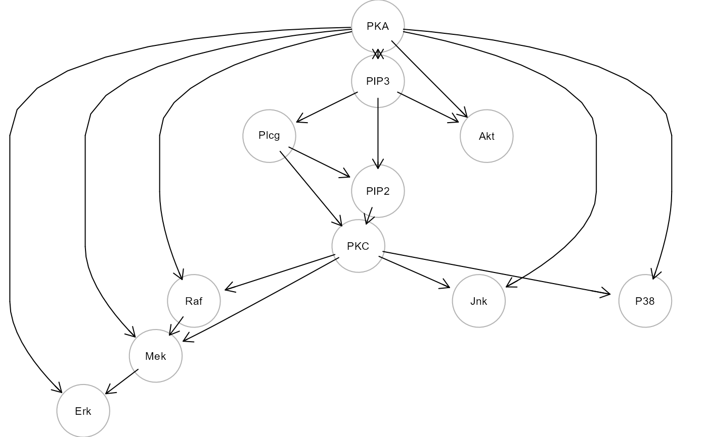

Flow cytometry data and causal model from Sachs et al. (2005).
sachs
"sachs" is a list of 5 objects:
"rawdata", a list of 14 data.frames containing raw flow cytometry data (Sachs et al., 2005);
"graph", consensus signaling network;
"model", consensus model (lavaan syntax);
"pkc", data.frame of 1766 samples and 11 variables, containing cd3cd28 (baseline) and pma (PKC activation) data;
"group", a binary group vector, where 0 is for cd3cd28 samples (n = 853) and 1 is for pma samples (n = 913).
"details", a data.frame containing dataset information.
Sachs K, Perez O, Pe'er D, Lauffenburger DA, Nolan GP (2019). Causal Protein-Signaling Networks Derived from Multiparameter Single-Cell Data. Science, 308(5721): 523-529.
#> [1] "cd3cd28" "cd3cd28_icam2" "cd3cd28_aktinhib" #> [4] "cd3cd28_g0076" "cd3cd28_psitect" "cd3cd28_u0126" #> [7] "cd3cd28_ly" "pma" "b2camp" #> [10] "cd3cd28icam2_aktinhib" "cd3cd28icam2_g0076" "cd3cd28icam2_psit" #> [13] "cd3cd28icam2_u0126" "cd3cd28icam2_ly"#> [1] 1766 11#> #> 0 1 #> 853 913#> #> # path model #> P38 ~ PKA + PKC #> Jnk ~ PKA + PKC #> Akt ~ PKA + PIP3 #> Erk ~ PKA + Mek #> Mek ~ PKA + PKC + Raf #> Raf ~ PKA + PKC #> PKC ~ PIP2 + Plcg #> PIP2 ~ PIP3 + Plcg #> Plcg ~ PIP3 #> #> # covariances #> PIP2 ~~ PIP3